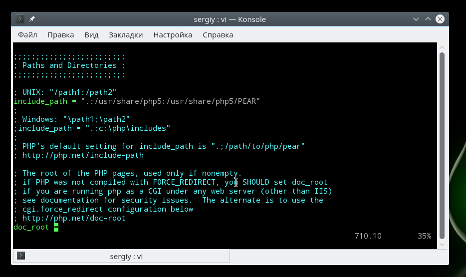

(5 оценок, среднее: 5,00 из 5)
(5 оценок, среднее: 5,00 из 5)Главная
Настройка файла php.ini
Настройка файла php.ini
Сервер Декабрь 8, 2016 3 admin
PHP - это один из самых популярных языков программирования для создания сайтов и веб-приложений. На нем разработано множество готовых систем управления контентом для блогов, сайтов фирм или даже интернет-магазинов. Несмотря на то что у этого языка есть свои недостатки, он достаточно прост в освоении и поэтому очень часто используется для разработки новых сайтов.
Интерпретатор php может поставляться в виде модуля для Apache, выполнять скрипты из командной строки или в виде отдельного сервиса php-fpm. Эти сервисы отличаются своими возможностями, и предназначением, но для любого вида интерпретатора нужно задать базовые настройки, например, рабочая папка, включенные расширения, отображение ошибок и так далее. Все эти настройки задаются через файл php.ini. В этой инструкции мы рассмотрим как выполняется настройка файла php.ini в операционных системах Linux, хотя все информация подойдет и для Windows.
Если у вас еще не установлен интерпретатор языка программирования php, то вы можете ознакомиться со статьей установка lamp в Ubuntu 16.04.
Расположение и синтаксис php.ini
Для каждой версии интерпретатора конфигурационный файл php.ini находится в отдельной папке. Но все конфигурационные файлы находятся в папке /etc/php, например, /etc/php5:
ls /etc/php5/
Папка conf.d содержит общие настройки для различных расширений и модулей, они не будут нас сейчас интересовать. Более интересны следующие три папки - apache, cli и fpm. В них содержатся конфигурационные файлы php.ini для каждого из этих интерпретаторов.
Если вы собираетесь использовать несколько из этих интерпретаторов, то вам придется указывать настройки для каждого из них отдельно. Вы можете убедиться, что в каждой из папок лежит файл php.ini.
Что касается синтаксиса файла, то он разделен на секции, сначала идет секция настройки php, которая разделена на подсекции в зависимости от типа настроек, дальше идут секции настройки разных модулей. Синтаксис самих настроек очень прост, он соответствует привычному синтаксису ini файлов. Строка начинается с имени настройки, затем следует знак равно, а за ним значение:
имя_настройки=значение_параметра
Символами [] обозначается имя секции, например, [PHP], а символ ; означает комментарий, он и все символы после него не читаются интерпретатором. А теперь рассмотрим как выполняется настройка php.ini и переберем самые важные параметры.
Для удобства ориентирования мы разобьем все параметры по категориях в зависимости от их назначения. Вам будет достаточно найти нужный параметр и изменить его значение. А теперь откройте файл настроек php, например, для модуля apache и перейдем к настройке. Чтобы избежать ошибок не добавляйте новые строки, а ищите уже существующие и изменяйте значения на нужные:
sudo gedit /etc/php5/apache/php.ini
Сначала идет немного информации о самом файле в виде комментариев, затем интересующие нас настройки.
Настройка php 7 обычно начинается с конфигурации вывода ошибок. Все настройки вывода ошибок находятся в разделе Error handling and logging. По умолчанию вывод ошибок на экран во время выполнения скрипта отключен. Это сделано для того, чтобы пользователи не смогли увидеть ничего лишнего. Вместо этого, все ошибки записываются в лог файл. Если вы используете php на домашнем компьютере, то такие меры не нужны и вы можете сразу выводить все на экран:
display_errors=off
Замените off на on. В php используются различные типы ошибок, например, критические, предупреждения, ошибки синтаксиса, с помощью строки error_reporting вы можете включить вывод только определенных типов ошибок:
error_reporting = E_ALL & ~E_DEPRECATED
Если нужно объединить несколько типов ошибок, то используйте символ &, а для отключения отображения поставьте перед типом знак ~. Приведенный выше пример отображает все ошибки (E_ALL), кроме сообщений об устаревших функциях (E_DEPRECATED). Вы можете отключить все типы использовав 0:
error_reporting = 0
Включите запись ошибок php в лог файл, если не выводите их на экран:
log_errors = On
Чтобы не засорять лог однотипными сообщениями можно игнорировать повторяющиеся ошибки в пределах одного исполнения:
Если бы скрипты php никак не ограничивались в ресурсах, то они запросто могли бы перегрузить сервер и не дать ему нормально работать. Поэтому, по умолчанию php устанавливает жесткие ограничения, но, возможно, вам нужно будет их немного ослабить.
По умолчанию максимальное время выполнения скрипта - 30 секунд, сделаем минуту:
max_execution_time = 30
Если указать 0, то скрипт может выполняться бесконечно. Вы также можете ограничить время, на протяжении которого скрипт будет загружать данные, 60 секунд:
max_input_time=60
Максимальное количество переменных в GET и POST:
max_input_vars = 1000
Следующий параметр задает максимальное количество памяти, которую может использовать один скрипт во время своего выполнения, в мегабайтах:
memory_limit = 128M
Максимальный размер данных, передаваемых в POST запросе тоже ограничивается, размер по умолчанию - 8 Мегабайт:
post_max_size = 8M
Вы можете ограничить область действия php в системе с помощью опции openbase_dir, она указывает папку, выше которой скрипт не может получить доступ к файловой системе:
open_basedir = /var/www/
С помощью директив disable_functions и disable_classes вы можете отключить использование в скриптах определенных функций или классов, например, это может быть полезно для веб-хостингов. В этом примере мы отключаем использование функции ini_set, которая позволяет менять настройки php из скрипта:
disable_functions = ini_set

Файл настройки php.ini позволяет указать пути в файловой системе по умолчанию для различных действий. Вы можете задать папки где система будет искать скрипты, если вы попытаетесь подключить их с помощью инструкции include:
include_path = ".:/usr/share/php5:/usr/share/php5/PEAR"
Папка с модулями php:
extension_dir="./"
Папка для записи временных файлов:
sys_temp_dir = "/tmp"
Для того чтобы пользователи могли загружать свои файлы на сервер, например, фото, нужно включить эту функцию в php:
file_uploads = On
Максимальный размер загружаемого файла:
upload_max_filesize = 2M
Максимальное количество файлов, которые может загрузить один скрипт:
max_file_uploads = 20
Настройка php.ini практически завершена, нам остались лишь расширения.
Расширения позволяют очень сильно увеличить функциональность php. Например, благодаря расширениям вы можете использовать в своих скриптах базы данных mysql, postgresql, mysqli, sqlite, графическую библиотеку gd и многое другое. Все это включается в этом разделе.
Для включения расширения достаточно убрать комментарий перед строкой с его командой, например:
extension=php_mysql.so
extension=php_mbstring.so
extension=php_pgsql.so
Обратите внимание, что для windows расширение будет иметь формат dll, но для linux нужно использовать so. В следующих секциях идет настройка каждого из расширений, но мы их рассматривать не будем потому что они обычно не требуют настройки.
В этой статье мы рассмотрели как выполняется настройка php на сервере или обычном компьютере для разработки веб-сайтов. Файл настроек php имеет довольно простую структуру и с ним довольно не сложно справиться. После завершения всех настроек и сохранения изменений не забудьте перезагрузить веб-сервер или сервис php-fpm.
Вообще говоря, php-fpm это отдельная тема, потому что там есть много дополнительных настроек, и, возможно, мы рассмотрим его в одной из следующих статей. Если у вас остались вопросы, спрашивайте в комментариях!
Похожие записи:
Нет похожих записей
(5 оценок, среднее: 5,00 из 5)
Сохранить
Об авторе
Основатель и администратор сайта losst.ru, увлекаюсь открытым программным обеспечением и операционной системой Linux. В качестве основной ОС сейчас использую Ubuntu. Кроме Linux интересуюсь всем, что связано с информационными технологиями и современной наукой.
{kind=link}